Programación en R.
Módulo 04 - Visualización de datos.
Agenda del Curso
Módulo 1: Introducción a la programación en R.
- Ambiente de programación.
- Tipos de datos y estructuras de datos básicos.
- Control de flujo y funciones.
Módulo 2: Manejo de datos estructurados.
- Operaciones sobre dataframes.
- Joins y funciones estadísticas.
Módulo 3: Importar y exportar archivos de datos.
- Importar y exportar archivos de datos.
- Conexión a bases de datos SQL.
Módulo 4: Visualización de datos.
- Librería ggplot2 y elementos estéticos de gráficos.
Módulo 4: Visualización de datos.
Capas
Las visualizaciones de
ggplotse construyen paso a paso agregando nuevos elementos, uno encima de otro, usando el operador+.Estos nuevos elementos, son denominadas
capas.Data&aesthetics.Geometries.Facets.Statistics.Coordinates.Theme.
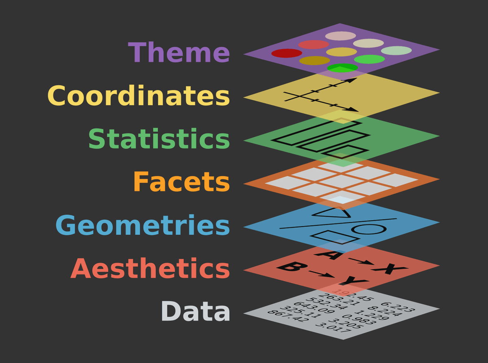
Para utilizar esta librería, basta con cargarla como:
library("ggplot2")
Facets
Las facetas o
Facetses un enfoque que divide una trama en una matriz de paneles. Cada panel muestra un subconjunto diferente de los datos.En
ggplot2, las facetas se dividen en:facet_grid()facet_wrap()
En gráficos de una sola variable, no existe una diferencia entre usar
facet_grid()ófacet_wrap().Los ejemplos descritos, se encuentran en:
Código: M4_C2_script01.R
Ejemplo 1
ggplot(data = mpg, aes(x = displ,
y = hwy)) + geom_point() +
facet_wrap(~cyl)
facet_wrap()
Ejemplo 2
ggplot(data = mpg, aes(x = displ, y = hwy)) +
geom_point(size = 2, alpha = 0.5) +
facet_wrap(~cyl)
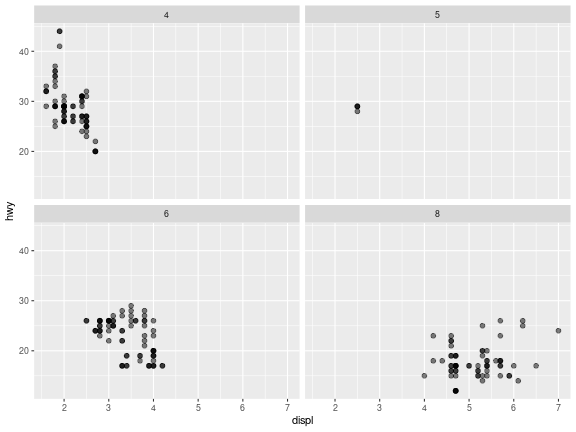
Ejemplo 3
ggplot(data = mpg, aes(x = displ, y = hwy,
color = drv)) + geom_point(size = 2,
alpha = 0.5) + facet_wrap(~cyl)
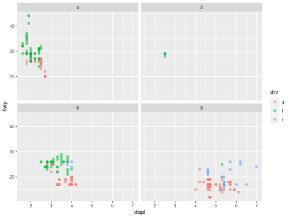
facet_grid()
Ejemplo 4
ggplot(ToothGrowth, aes(x=dose, y=len,
group=factor(dose))) +
geom_boxplot(aes(fill=factor(dose))) +
facet_grid(supp ~ .)
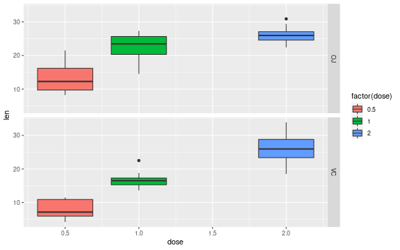
Ejemplo 5
ggplot(ToothGrowth, aes(x=dose, y=len,
group=factor(dose))) +
geom_boxplot(aes(fill=factor(dose))) +
facet_grid(.~supp)
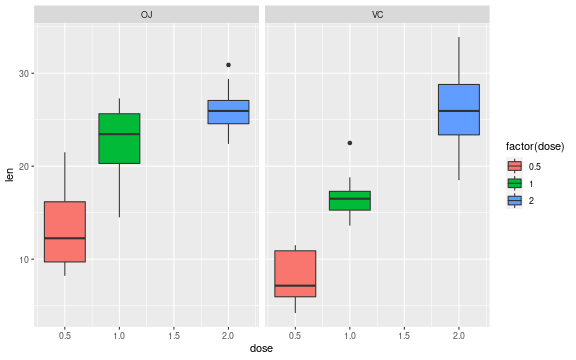
Coordinates
Coordenadas Lineales
coord_cartesian()coord_flip()coord_fixed()
Coordenadas no Lineales
coord_map()coord_polar()coord_trans()
Los ejemplos descritos, se encuentran en:
Código: M4_C2_script02.R
Ejemplo 6
ggplot(mpg, aes(displ, hwy)) +
geom_point(size = 3, alpha = 0.7) +
geom_smooth()
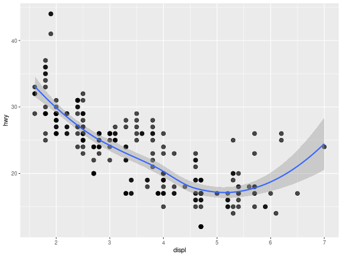
coord_cartesian()
Ejemplo 7
ggplot(mpg, aes(displ, hwy)) +
geom_point(size = 3, alpha = 0.7) +
geom_smooth() +
scale_x_continuous(limits = c(4, 6))
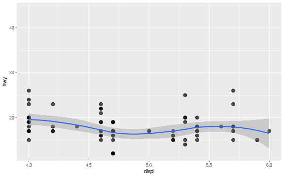
Ejemplo 8
ggplot(mpg, aes(displ, hwy)) +
geom_point(size = 3, alpha = 0.7) +
geom_smooth() +
coord_cartesian(xlim = c(4, 6))
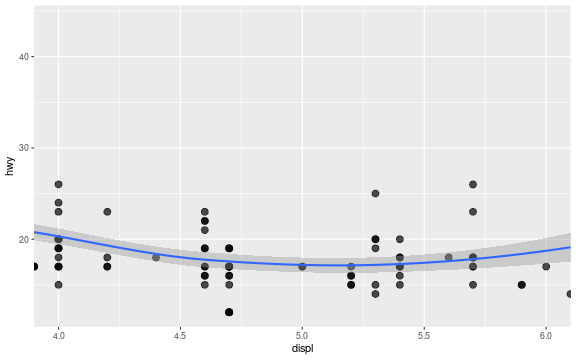
coord_flip()
Ejemplo 9
ggplot(ToothGrowth, aes(x=dose, y=len,
group=factor(dose))) +
geom_boxplot(aes(fill=factor(dose)))
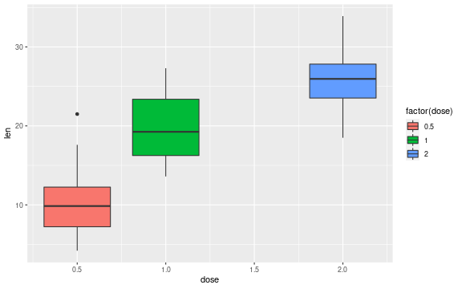
Ejemplo 10
ggplot(ToothGrowth, aes(x=dose, y=len,
group=factor(dose))) + coord_flip() +
geom_boxplot(aes(fill=factor(dose)))
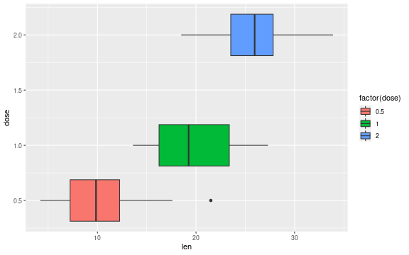
coord_fixed()
Ejemplo 11
ggplot(mtcars, aes(mpg, wt)) +
geom_point() +
coord_fixed(ratio = 1)
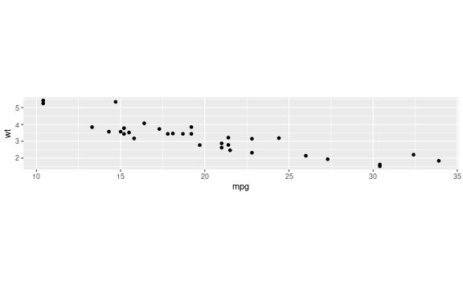
Ejemplo 12
ggplot(mtcars, aes(mpg, wt)) +
geom_point() +
coord_fixed(ratio = 5)
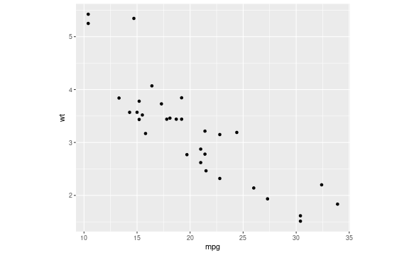
Theme
Los temas o
themeson capas que permiten personalizar aun más el gráfico que se quiere mostrar.El sistema de temas no afecta en cómo los datos son representados por
geom_*(), ó cómo son transformados por escalas. Es decir, los temas no cambian las propiedades perceptivas del gráfico, pero si ayudan a que el gráfico sea esteticamente mejor.Los ejemplos descritos, se encuentran en:
Código: M4_C2_script03.R
Ejemplo 13
ggplot(iris, aes(x=Sepal.Length,
y=Petal.Length, colour=Species)) +
geom_point(size=3) + ggtitle("Scatterplot") +
xlab("Petal Length (cm)") +
ylab("Sepal Length (cm)")
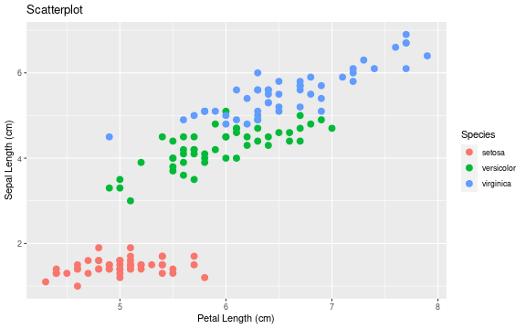
Theme
El sistema de
tematizaciónse compone de cuatro componentes principales:- Titulos, leyendas, ejes, etc.
- Color, tamaño de fuente, etc.
- Anula elementos predeterminados y crea unos más personalizados.
- Temas completos.
Los ejemplos descritos, se encuentran en:
Código: M4_C2_script03.R
Ejemplo 14
ggplot(mpg, aes(cty, hwy,
color = factor(cyl))) +
geom_jitter() +
geom_abline(colour = "grey50",
size = 2)
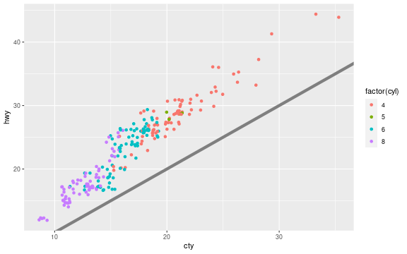
labs()
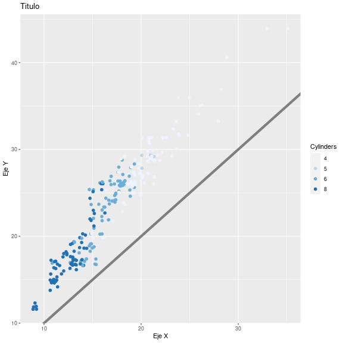
Ejemplo 15
ggplot(mpg, aes(cty, hwy,
color = factor(cyl))) +
geom_jitter(size = 3) +
geom_abline(colour = "grey50",
size = 2) +
# Capa labs
labs(
x = "Eje X",
y = "Eje Y",
colour = "Cylinders",
title = "Titulo") +
# Escala de Colores
scale_colour_brewer()
scale_colour_brewer()
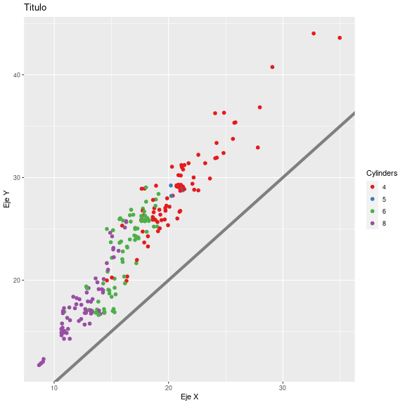
Ejemplo 16
ggplot(mpg, aes(cty, hwy,
color = factor(cyl))) +
geom_jitter(size = 3) +
geom_abline(colour = "grey50",
size = 2) +
# Capa labs
labs(
x = "Eje X",
y = "Eje Y",
colour = "Cylinders",
title = "Titulo") +
# Escala de Colores
scale_colour_brewer(palette = "Set1")
theme_minimal()
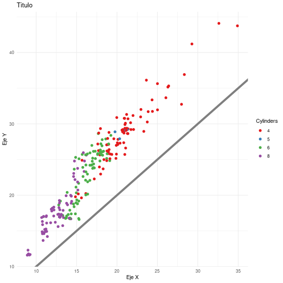
Ejemplo 17
ggplot(mpg, aes(cty, hwy,
color = factor(cyl))) +
geom_jitter(size = 3) +
geom_abline(colour = "grey50",
size = 2) +
# Tema de fondo
theme_minimal() +
# Capa labs
labs(
x = "Eje X",
y = "Eje Y",
colour = "Cylinders",
title = "Titulo") +
# Escala de Colores
scale_colour_brewer(palette = "Set1")
theme()
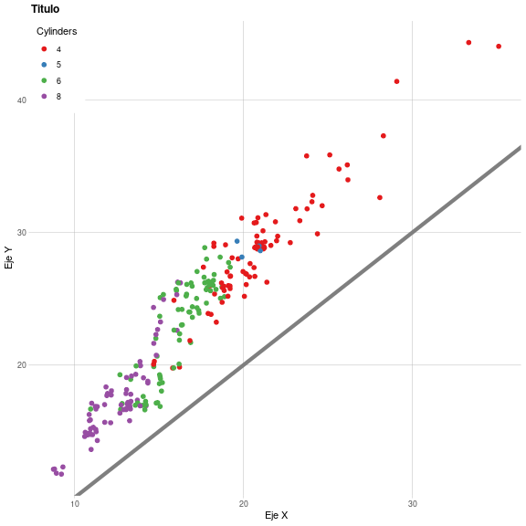
Ejemplo 18
El siguiente ejemplo, ilustra la visualización de datos con varias capas aplicadas.
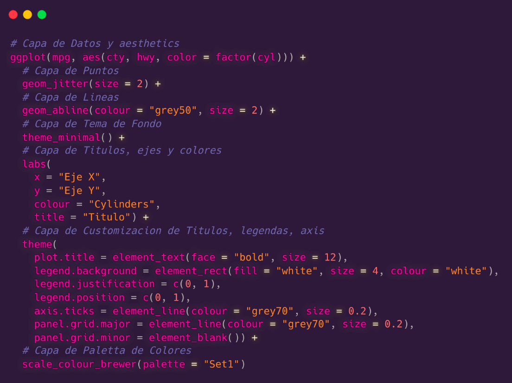